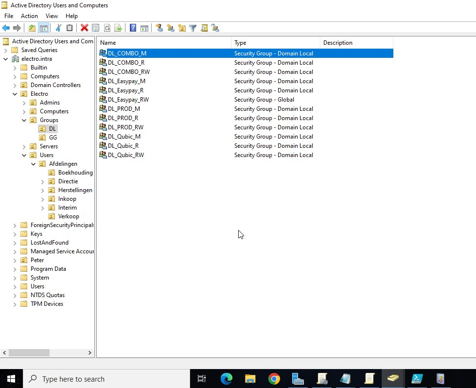
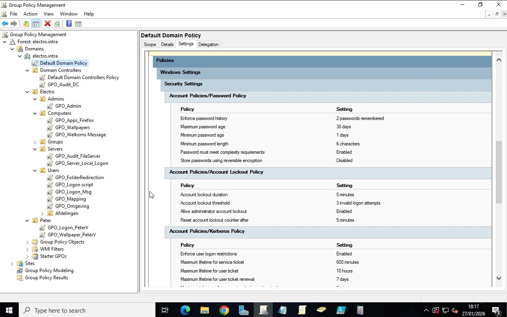
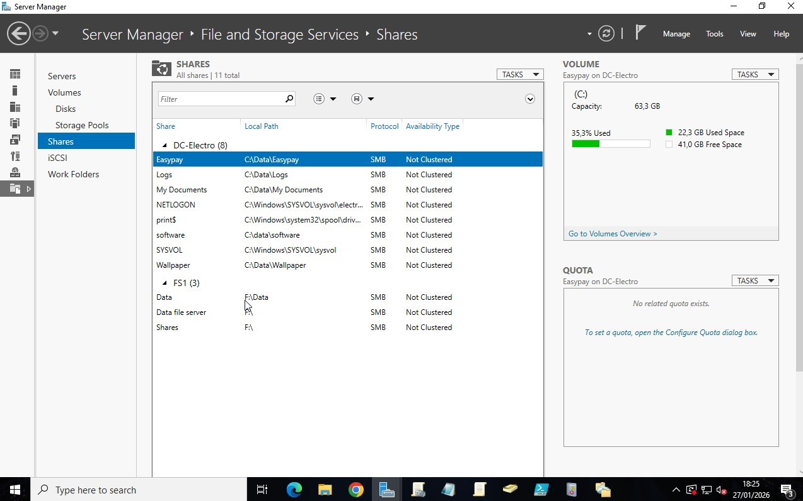
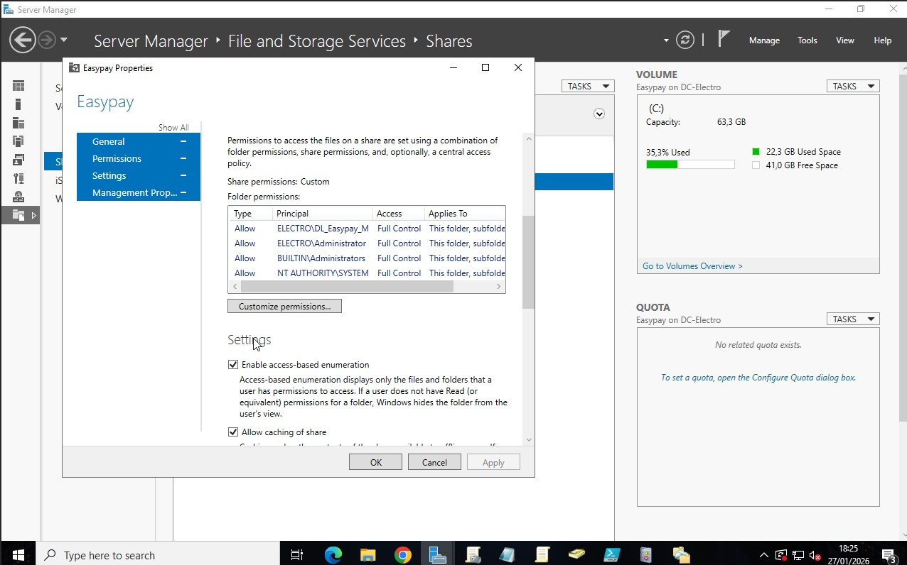
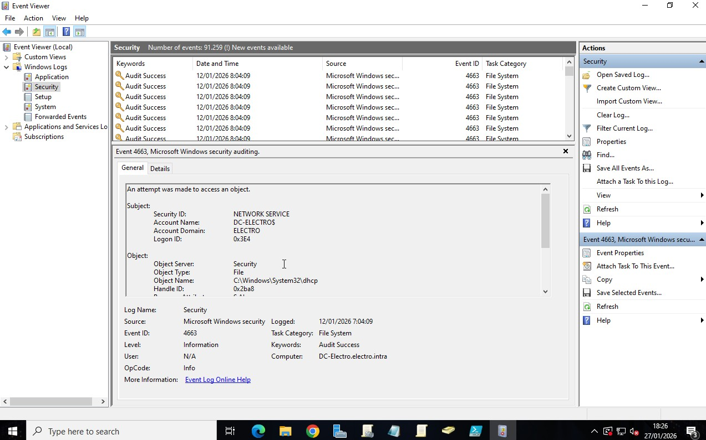
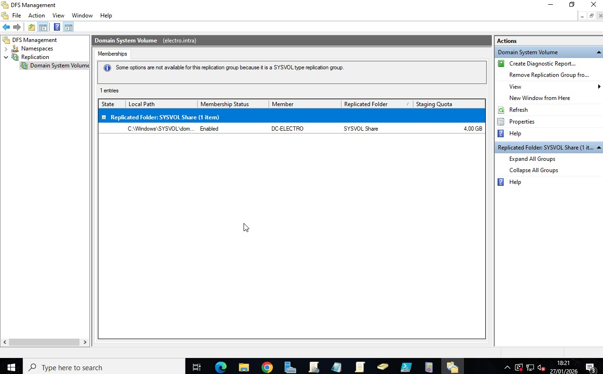

Project · Infrastructuur · VDAB-opleiding
Active Directory& Windows Server
Een realistische Active Directory-omgeving voor een fictieve kmo, Electro, met focus op structuur, security, schaalbaarheid en beheerbaarheid.
Context
Context en doel
- Middelgrote organisatie met meerdere afdelingen
- Centrale Windows Server-infrastructuur
- Gecentraliseerd gebruikers- en rechtenbeheer
- Strikte scheiding tussen gebruikers, computers en servers
Doel
Een onderhoudsvriendelijke en uitbreidbare domeinstructuur die eenvoudig te beheren is en duidelijke security-grenzen hanteert.
Aanpak
Waarom deze opzet?
Bewust opgezet volgens klassieke enterprise-principes.
- Een duidelijke OU-structuur in plaats van een platte AD
- Het AGDLP-model voor toegangsbeheer
- Geen rechten rechtstreeks op gebruikers
- Auditing en logging standaard voorzien
- Fileshares en policies schaalbaar per afdeling
- Minder fouten bij groei
- Eenvoudiger troubleshooting
- Betere security-controle
- Vlot over te dragen aan andere beheerders

Opbouw
Wat ik heb opgezet
Active Directory-structuur
- Logische OU-structuur per afdeling
- Scheiding tussen users, computers en servers
- Voorbereid op delegatie en groei
Groepen en rechten (AGDLP)
- Rollen via globale groepen
- Toegang via domain local groups
- Geen permissies rechtstreeks op gebruikers
Fileshares en opslag
- Beheer via Server Manager
- Access-Based Enumeration actief
- NTFS-rechten uitsluitend via groepen
- Structuur per afdeling en functie
Group Policy
- Password- en account lockout policies
- Logon scripts en drive mappings
- Folder redirection
- Consistente configuratie per OU
Auditing en beheer
- File system auditing op gevoelige mappen
- Inzicht in wie wat wanneer raadpleegde
- Beheer via RSAT / MMC
- Focus op traceerbaarheid
Beelden
Uit de praktijk
Klik op een beeld om het groot te bekijken.





Resultaat
Wat dit project aantoont
Inzicht in Active Directory-design
Correct gebruik van security best practices
Praktische ervaring met Windows Server
Gestructureerde aanpak van infrastructuur
Denken in beheerbaarheid en schaalbaarheid
Verder kijken
Meer over mijn loopbaan en projecten
Op mijn cv-site staan mijn ervaring, mijn eigen software en het volledige cv als pdf.